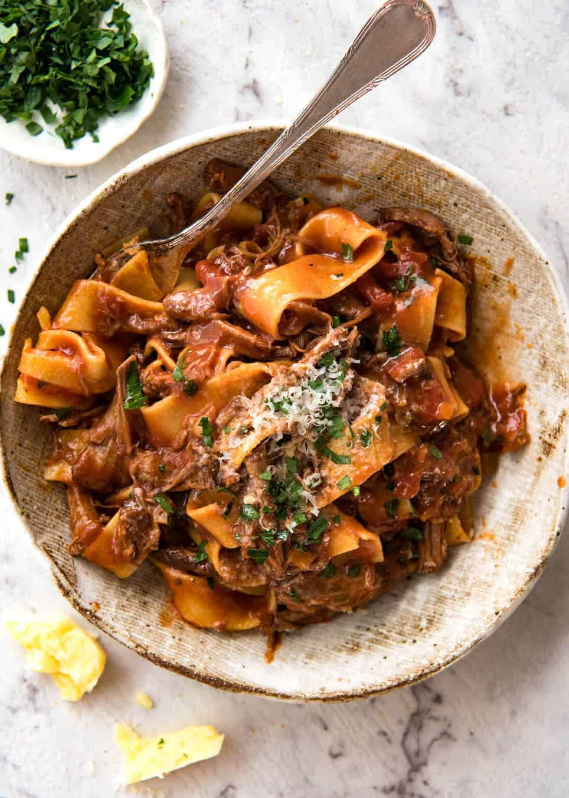

Beef Ragu

Slow cooked beef ragu perfect for a meal at the end of a busy day
And while this Slow Cooked Shredded Beef Ragu Sauce will be great with any type of pasta, the best pasta for a rich sauce like this ragu is pappardelle. This wide, flat pasta is especially great for this recipe because the shredded beef clings to the wide strands.
- 1.2kg / 2.5 lb chuck beef or other slow cooking beef cut, cut into equal 4 pieces (Note 1)
- 1 tbsp salt
- black pepper
- 3 tbsp olive oil , separated
- 3 cloves garlic , minced
- 1 onion , diced
- 1 cup carrots , diced (Note 2)
- 1 cup celery , diced (Note 2)
- cook steak
- cut vegetables
- put in slow cooker